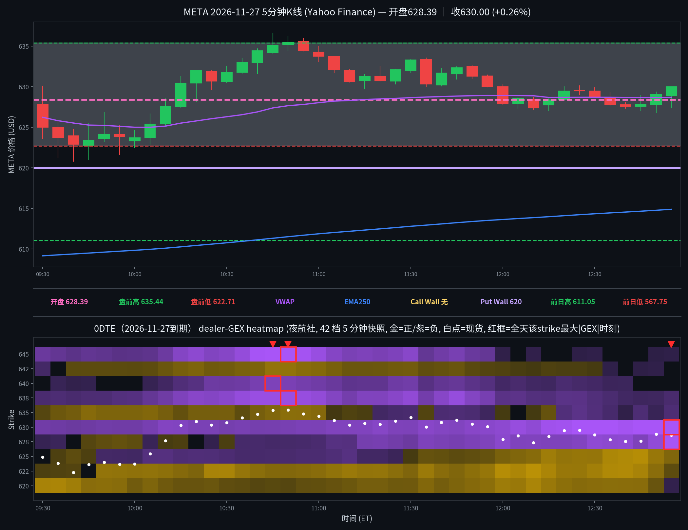

META 日内报告
2026年11月27日 · 周五 · 日内报告
早盘分析
（Junk-man 早盘简报未抓取到，留空待补）
（待补充 Junk-man 当日 #junkman-analysis 原文）
5 分钟 K 线＋0DTE dealer-GEX heatmap
0DTE（2026-11-27 到期）dealer-GEX heatmap，42 档 5 分钟快照（提前收盘，09:30–12:55 ET）；墙位为 Junk-man 简报口径（本日缺席记 null），算法墙见正文。

heatmap解读（0DTE 2026-11-27 到期链，42 档）
0DTE（2026-11-27 到期）链 42 档 5 分钟快照齐全（09:30–12:55 ET，提前收盘）。全天总 gamma 始终为负（-107.3M～-0.6M），0 次翻号——是持续负 gamma 日。开盘 -25.9M，10:00 -4.8M、10:30 -48.2M、11:00 -72.8M、11:30 -80.0M、12:00 -23.5M、12:30 -50.4M、12:55 -107.3M（全天最负，收盘帧）。King 全天贴在现货下方：620（+12.6M @09:30）→ 622.5（+7.8M @10:00 → +12.7M @10:30 → +6.7M @11:00 → +5.3M @11:30 → +15.7M @12:00 全天最大正值 → +11.4M @12:30）→ 625（+5.5M @12:55 收盘帧）。620 在 12:10 一度回升至 +13.0M，625 则由午间负值翻回 +10.8M @12:15、接棒收盘 King。负 gamma 集中在现货一带：630 全天为负且越收越深（-12.8M @09:30 → -19.8M @10:10 → -25.4M @12:10 → -48.1M @12:50 → -63.8M @12:55），627.5 午后转负至 -42.9M @12:55；上方 645（-44.8M @10:50）、637.5（-30.7M @10:50）、640（-17.1M @10:45）三点在 10:45–10:50 同时达到峰值——恰是价格冲日高 636.62 的同一时段，随后价格回落。收盘帧（12:55，20 个 cell，正常帧非到期残值）：总 gamma -107.3M，King 625 +5.5M；630 -63.8M / 627.5 -42.9M两个负值紧贴收盘价，632.5 仅 +1.7M、635 -3.6M。
- 开盘 628.39（YHS 日线官方开盘；较周三收 609.80 高开 +18.59 / +3.05%），盘前高 635.44 / 低 622.71，09:25 盘前价 628.56；盘前区间 12.73 点、日波幅 15.82 点——盘前区间占全天波幅的 80%，日内波动基本在盘前区间内（日高仅比盘前高高 1.18 点，日低仅比盘前低低 1.91 点）
- 首根 5m 收 625.03 → 09:40 收 622.91、日低 620.80（仅比首帧 Put 墙 620 高 0.80 点，墙被精确测试一次且守住；且日低仍比前日高 611.05 高 9.75 点，跳空缺口全天未被回补）→ 10:05 收 625.40、10:10 收 627.56 → 10:15 收 630.44（首根收上 630）→ 10:45 收 635.12（首根收上 635，日高 636.62 就在该根）
- 上午冲高后回落：10:50 收 635.50 → 11:00 收 633.75、11:10 收 630.64、11:30 收 633.31、11:55 收 630.02 → 12:00 收 627.95、12:15 那根探午间低 627.03 → 尾盘磨回 12:55 收 630.00（终根开 628.94、高 630.00、收在根高）
- 全天是跳空高开、缺口未补的强势日：日低 620.80 与日高 636.62 双双高于前日高 611.05，收盘 630.00 站在前日高之上 18.95 点；收盘在 VWAP 628.70 上方 1.30 点、EMA250 614.89 上方 15.11 点
- 收盘位置：630.00，正压在全天最大负节点 630（-63.8M @12:55）上；下方 627.5（-42.9M）紧贴 2.5 点，625（+5.5M，King）/ 622.5（+1.6M）为下方仅有的正 gamma；上方 632.5 仅 +1.7M、635 -3.6M，阻力薄弱
全天最大节点 TOP5
全天 42 档快照内各 strike 的最大 |GEX|，与图表红框一致。注意：① TOP5 全为负值——全天最大正值仅为 622.5 的 +15.7M（@12:00），未进 TOP5；② 630 的 -63.8M（@12:55）是全天最大单点，收盘价 630.00正压在该负节点上；③ 645（-44.8M @10:50）/ 637.5（-30.7M @10:50）/ 640（-17.1M @10:45）三点在价格冲日高 636.62 的同一时段同时见顶，随后价格回落、645 到 12:25 已衰减至 -0.2M；④ 627.5 的 -42.9M（@12:55）是午后才长出来的负值，12:15 那根日低 627.03 已探至其附近。
资金流（口径 premium≥$20万｜size≥50｜DTE≤1｜side=at_ask/at_bid；mid单列、绝不计入主动买卖）
（当日无符合筛子的 flow 记录，或数据未拉取到）
DTE≤1 口径下全天 0 笔大单：YHS flow/trades 在 premium≥$20万、size≥50、side=B/M/A、kind=order、DTE≤1 条件下无任何成交。提前收盘的短交易日（09:30–13:00 ET）叠加感恩节假期，大单缺席是事实，不作方向判断——价格全天走势无大单背书，也无大单反向。
分析总结
价格行为 × 全天 GEX 结构复盘
① 开盘 628.39（YHS 日线官方开盘；较周三收 609.80 高开 +18.59 / +3.05%），全天 620.80–636.62，收 630.00（+3.31% vs 周三收；收开差 +1.61 / +0.26%）。盘前高 635.44 / 低 622.71，09:25 盘前价 628.56。按体例为正常日（lib.EVENT_DAYS 无本日条目；财报已于 10-29 盘后发布），感恩节次日提前至 13:00 收盘。
② 白点轨迹（K 线）：09:30 首根收 625.03 → 09:40 收 622.91、日低 620.80（仅比首帧 Put 墙 620 高 0.80 点，精确测试一次且守住）→ 10:15 收 630.44（首根收上 630）→ 10:45 收 635.12（首根收上 635，日高 636.62 在该根）→ 午间 630–635 横盘磨 → 12:15 那根探午间低 627.03 → 尾盘磨回 12:55 收 630.00（VWAP 上方 1.30、EMA250 上方 15.11）。
③ 结构（42 档全天）：首帧算法墙 Call 无 / Put 620（+12.6M，兼 King）——现货上方无达标 Call 墙（632.5 +2.1M / 650 +2.0M / 635 +1.1M 均未达 King 的 25%）。全天总 gamma 始终为负（-107.3M～-0.6M，0 次翻号），King 620 → 622.5（峰值 +15.7M @12:00）→ 625（+5.5M @12:55）全程贴在现货下方。负 gamma 集中在现货一带：630 越收越深至 -63.8M，627.5 午后转负至 -42.9M；上方 645/637.5/640 三点在 10:45–10:50 随日高同时见顶后衰减。收盘价 630.00 正压在最大负节点上。
④ Junk-man 简报已核实缺席（见 junkman 字段）：按 2026-11-05 用户指令不再查 Discord，本地无用户当日粘贴/上传的简报文件，墙位记 null；首帧算法墙见上文，非简报墙。过夜墙迁移不做：昨日收盘帧属 2026-11-25 链（已到期），今日首帧属 2026-11-27 链，不同链对照不成立。
⑤ 资金流：DTE≤1 口径下全天 0 笔大单（premium≥$20万、size≥50），提前收盘的短交易日叠加感恩节假期，大单缺席是事实，不作方向判断。
K线=Yahoo Finance 5分钟；heatmap=夜航社 dealer-GEX 5分钟快照（0DTE 2026-11-27 到期链，42 档，提前收盘）。
收盘后的静态快照；页面不在打开时更新行情。提前收盘日：常规时段 09:30–13:00 ET，报告口径取 12:55 bar 收盘价 630.00；Yahoo 官方收盘参考 regularMarketPrice 628.96，与 12:55 bar 收 630.00 差 1.04，报告沿用历日惯例取最后一根常规 bar 收盘价。另：Yahoo meta 的 chartPreviousClose 显示 620.19，与 5m bar 算出的上一交易日收盘 609.80 不符，报告以前一日 5m bar 为准，不采纳该 meta 值。图表构建器本日修过提前收盘截断（session_end_et=13:00），旧版 hour<16 会把 13:05–15:55 盘后 bar 混入常规时段。